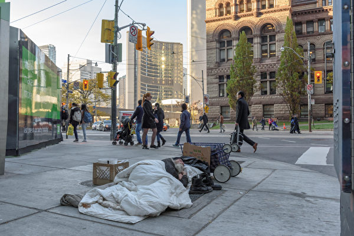

安省各地社区约有1,400个无家可归者营地，这是更深层的系统失败的表现，有损安省的社会和经济繁荣。（Shutterstock） 【2024年08月09日讯】（记者季薇多伦多报导）非营利组织安省大城市市长 （OBCM）周四（8月8日）宣布，发起一场“解决危机”（Solve the Crisis）运动，呼吁联邦、省府提供更多资源，解决全省社区中无家可归和成瘾危机。OBCM主席、伯灵顿市市长玛丽安·米德·沃德（Marianne Meed Ward）表示：“一场人道危机正在我们的街头上发生，有人在死亡，需要采取行动。无家可归的人数以及那些患有心理健康和成瘾问题的人数正在以惊人的速度增加，市政当局无法独自解决这一危机。我们需要省级政府，以及所有各级政府和社区伙伴，实施已被证明有效的计划。”
副主席伦敦市长乔什·摩根（Josh Morgan）表示：“‘解决危机’运动是关键的一步，将把各级政府和社区伙伴聚集在一起，确保安省每个居民都能获得安全、支持性的住房，以及必要的心理健康和戒瘾服务。”
OBCM由人口超过100,000的29个安省城镇的市长组成，总共代表了安省近70%的人口。
大城市市长们提出了5项要求，包括呼吁省府成立一个省级部门、任命一位厅长，专职负责解决住房需求、心理健康、成瘾问题，提供全面支援服务。
米德·沃德表示，目前这项工作分散在大约16个省级部门之间，几乎不可能协调出一个全面的应对措施，以解决这些非常复杂的问题。
“解决危机”得到了许多团体的支持，包括加拿大心理健康协会 (CMHA)、安省市镇协会 (AMO)。
据CBC报导，AMO主席科林·贝斯特（Colin Best）表示，安省各地社区约有1,400个无家可归者营地，这是更深层的系统失败的表现，有损安省的社会和经济繁荣。
CMHA首席执行官卡米尔·昆内维尔（Camille Quenneville）表示，安省需要增加10万个支持性住房单位，以应对现有的等候名单。
昆内维尔还希望立即增加社区危机中心的资金，现有的解决方案已被证明有效。
责任编辑：岳怡